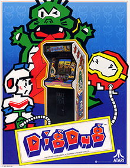

Dig Dug

Dig Dug is a maze arcade game developed by Namco in 1981 and released in 1982, distributed in North America by Atari, Inc. The player controls Dig Dug to defeat all enemies per stage, by either inflating them to bursting or crushing them underneath rocks. Dig Dug was planned and designed by Masahisa Ikegami, with help from Galaga creator Shigeru Yokoyama. It was programmed for the Namco Galaga arcade board by Shouichi Fukatani, who worked on many of Namco's earlier arcade games, along with Toshio Sakai. Music was composed by Yuriko Keino, including the character movement jingle at executives' request, as her first Namco game. Namco heavily marketed it as a "strategic digging game". Upon release, Dig Dug was well received by critics for its addictive gameplay, cute characters, and strategy. During the golden age of arcade video games, it was globally successful, including as the second highest-grossing arcade game of 1982 in Japan. It prompted a long series of sequels and spin-offs, including the Mr. Driller series, for several platforms. It is in many Namco video game compilations for many systems.

More Info Here